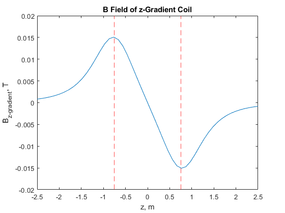

Contents
close all
clear
clc
The B0 Field
z = linspace(-2.5, 2.5, 100);
Rect = [-1, -0.25, 2, 0.5];
Bz = 0;
u = pi*4e-7;
N = 64;
i = N.*[49, 64, 49];
Z = 1.5*[-sqrt(3/7), 0, sqrt(3/7)];
a = 1.5*[ sqrt(4/7) , 1, sqrt(4/7)];
for o = 1 : length(i)
Bz = Bz + ((u*i(o).*a(o).^2)*N)./(2*(a(o).^2 + (z - Z(o)).^2)).^(3/2);
end
figure
plot(z, Bz/.14)
hold on
for x = [-1, 0, 1]
xline(x, '--r')
end
xlim([-2.5, 2.5])
xlabel('z, m')
ylim([0,1.2])
ylabel('B_0, T')
title('B_o Field of Maxwell Coil')
hold off
x = linspace(-1.8, 1.8, 50);
z = linspace(-1.8, 1.8, 50);
[X,Z] = meshgrid(x,z);
z0 = 0;
z1 = sqrt(3/7)*1.5;
z2 = -sqrt(3/7)*1.5;
a = 1.5;
a1 = sqrt(4/7)*1.5;
a2 = sqrt(4/7)*1.5;
i = 49*N;
i1 = 64*N;
i2 = i;
figure
hold on
[BX,BZ] = loopBField(X, Z, a , z0, i );
[BX1,BZ1] = loopBField(X, Z, a1, z1, i1);
[BX2,BZ2] = loopBField(X, Z, a2, z2, i2);
pcolor(Z, X, (3500/11)*(sqrt(BZ.^2 + BX.^2) + sqrt(BZ1.^2 + BX1.^2) + sqrt(BZ2.^2 + BX2.^2) ))
quiver(Z, X, (3500/11)*(BZ + BZ1 + BZ2), (3500/11)*(BX + BX1 + BX2), 3, 'm');
rectangle ('Position', Rect)
shading interp;
colorbar;
axis square;
xlim([min(x),max(x)]);
xlabel('z, k');
ylim([min(z),max(z)]);
ylabel('x, k');
title('B_o Vector Field/Magnitude of Maxwell Coil')
hold off
Gradient Fields
z = linspace(-2.5, 2.5, 50);
R = 0.75;
d = 1.5;
I = 2000;
BZ1 = (u/4*pi)*((2*pi*R^2*I)./(((z+(d/2)).^2+R^2).^(3/2)));
BZ2 = (u/4*pi)*((2*pi*R^2*I)./(((z-(d/2)).^2+R^2).^(3/2)));
figure
plot(z, BZ1- BZ2);
hold on
for o = [0.75, -0.75]
xline(o, '--r')
end
xlim([-2.5, 2.5])
xlabel('z, m')
ylim([-0.02, 0.02])
ylabel('B_{z-gradient}, T')
title('B Field of z-Gradient Coil')
hold off
x = linspace(-1.8, 1.8, 50);
z = linspace(-1.8, 1.8, 50);
[X,Z] = meshgrid(x,z);
a = 0.75;
a1 = a;
z0 = 0.75;
z1 = -z0;
i = 49*N;
i1 = 64*N;
[BX ,BZ ] = loopBField(X, Z, a , z0, i );
[BX1,BZ1] = loopBField(X, Z, a1, z1, i1);
figure
pcolor(Z, X, (40/9)*(sqrt(BZ.^2 + BX.^2) + sqrt(BZ1.^2 + BX1.^2)))
hold on
quiver( Z, X, (40/9)*(BZ + BZ1), (40/9)*(BX + BX1), 3, 'm')
rectangle ('Position', Rect)
shading interp
colorbar
axis square
xlim([min(x),max(x)])
xlabel('z, m')
ylabel('x, m')
ylim([min(z),max(z)])
title('B Vector Field/Magnitude of z-Gradient Coil')
hold on


Birdcage Coils
x = linspace(-0.5, 0.5, 50);
y = linspace(-0.5, 0.5, 50);
[X,Y] = meshgrid(x,y);
N = [6, 10, 14];
Bz = 0;
th = 0;
a = 0.3;
titles = ["6 Coils" ; "10 Coils" ; "14 Coils"];
for g = 1:length(N)
figure
Bx = 0;
By = 0;
for c = 1 : N(g)
th = (2*pi./N(g)).*c;
x_0 = a.*cos(th);
y_0 = a.*sin(th);
i = sin(th+(pi./2));
[BX,BY] = lineBField(X, Y, x_0, y_0, i);
Bx = Bx + BX;
By = By + BY;
end
mag = sqrt(Bx.^2+ By.^2);
pcolor(X,Y,mag);
hold on
quiver(X,Y,Bx,By, 3, 'm')
rectangle ('Position', Rect)
shading interp
colorbar
axis square
xlim([min(x),max(x)])
xlabel('x, m')
ylim([min(y),max(y)])
ylabel('y, m')
title(titles(g))
hold off
end